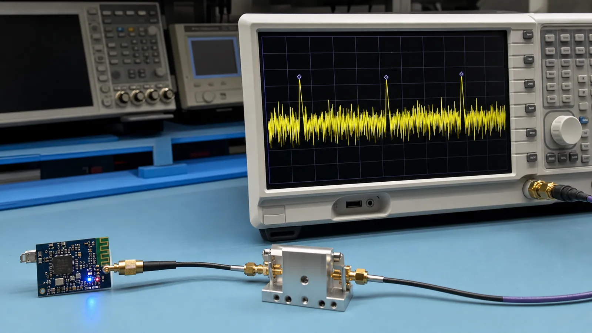

هر بیت BLE در نهایت به موج رادیویی در باند 2.4 گیگاهرتز تبدیل میشود. شناخت لایه فیزیکی کمک میکند علت افت برد، تداخل Wi-Fi، تفاوت سرعتها و اثر آنتن را بفهمید و تنظیمات رادیو را کورکورانه انتخاب نکنید.
BLE در باند آزاد ISM کار میکند و 40 کانال با فاصله 2 مگاهرتز دارد. سه کانال اصلی 37، 38 و 39 برای Advertising اولیه استفاده میشوند و طوری پخش شدهاند که احتمال برخورد همزمان با کانالهای رایج Wi-Fi کمتر شود. 37 کانال دیگر برای تبادل داده در اتصال به کار میروند.
در GFSK اطلاعات با تغییر کنترلشده فرکانس حامل منتقل میشود. فیلتر گاوسی پهنای طیف را محدود میکند تا انرژی کمتری به کانالهای مجاور نشت کند. PHY فقط سرعت اسمی نیست؛ روش کدگذاری، حساسیت گیرنده، زمان روی هوا و در نتیجه مصرف انرژی را هم تغییر میدهد.
LE 1M انتخاب عمومی و سازگار است. LE 2M زمان ارسال یک حجم ثابت داده را کم میکند و در شرایط مناسب Throughput را بالا میبرد، ولی حساسیت و برد آن معمولاً کمتر از 1M است. LE Coded با افزونگی بیشتر امکان دریافت در سیگنال ضعیفتر را فراهم میکند؛ در عوض زمان روی هوا و مصرف هر پیام بیشتر میشود.
در یک اتصال، کانال داده ثابت نمیماند. دو دستگاه بر اساس الگوریتم مشترک بین کانالهای مجاز جابهجا میشوند و کانالهای نامناسب میتوانند از Channel Map کنار گذاشته شوند. این رفتار مقاومت ارتباط را در برابر Wi-Fi، نویز و محوشدگی چندمسیره بیشتر میکند، اما جای طراحی درست آنتن و تست RF را نمیگیرد.
برای سنسوری در یک اتاق معمولی از 1M شروع کنید. اگر حجم داده بالا و RSSI مناسب است 2M را آزمایش کنید. اگر برد اولویت دارد، Coded PHY را فعال کنید و زمان ارسال و مصرف متوسط را دوباره اندازه بگیرید. نتیجه را با عدد ثبت کنید، نه با برداشت چشمی.